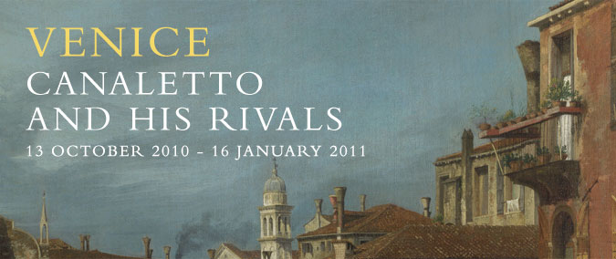

Wenecja oczami Canaletta
Londyńska National Gallery zaprasza na spacer uliczkami niezrównanej Wenecji, utrwalonej na obrazach pędzla Canaletta oraz jego współczesnych.
Oprócz malowideł Giovanniego Antonia Canal zwanego Canaletto zaprezentowane zostaną płótna takich artystów, jak Luca Carlevarijs, Gaspar van Witell, Michele Marieschi, Bernardo Bellotto oraz Francesco Guardi.